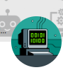

Cimientos del HUB
Mapa de temas, estructura HTML/CSS/JS, repositorio GitHub y primera publicación.
Tu centro de repaso de Desarrollo de Software: conceptos, herramientas, prácticas y retos para recordar lo aprendido y seguir creciendo.
const estudiante = {\n grupo: '3DS-B',\n pasión: 'software',\n retos: Infinity\n};\n\nfunction crecer() {\n return '¡Sigue creando!';\n}\n\n// Tu siguiente nivel comienza aquí ✨
Temas recordados del año. Los nombres oficiales deben confirmarse con Classroom.
Preguntas con explicación para practicar lo aprendido.
Un error no es el final: cada respuesta incluye una explicación para ayudarte a mejorar.
Etapas basadas en las guías del proyecto: construcción, mejora y entrega.
Mapa de temas, estructura HTML/CSS/JS, repositorio GitHub y primera publicación.
Convertir el prototipo en una experiencia útil: fichas, interacción, contenido y pruebas.
Verificación, presentación, manual, evidencias y publicación de la versión final.
Navegación, contenido legible, fichas y enlace público.
Búsqueda, filtros, cuestionarios y diseño adaptable.
Identidad visual, detalles pulidos, accesibilidad y documentación.
Documentación y sitios oficiales de referencia.
Conoce los espacios de aprendizaje y guarda tus apuntes de cada clase.
3.º BTV en Desarrollo de Software «B»
Escribe recordatorios, temas pendientes o ideas para consultar en esta clase.

Espacio 3DS-B-2026
Organiza tus apuntes y pendientes de este espacio de Classroom.
Los apuntes se guardan solo en este navegador. Los accesos privados a Classroom se deben agregar únicamente con enlaces reales de las clases.
Marca las tareas realizadas. El progreso se guarda en este navegador.